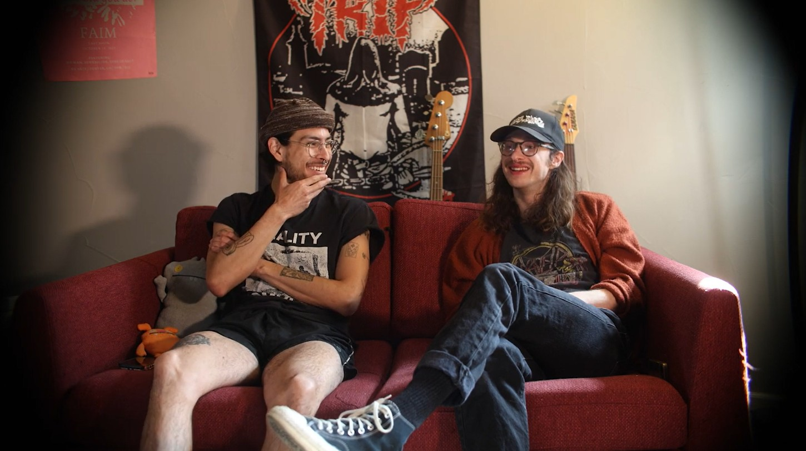

Memories Of The Blue House

Short 10 minute documentary where I interviewed the former organizers of The Blue House , a former home of DIY Punk music in Boulder.
Serves to reminisce the venue for people who were there, and shows the recent past of Boulder Punk music that many did not get to experience.